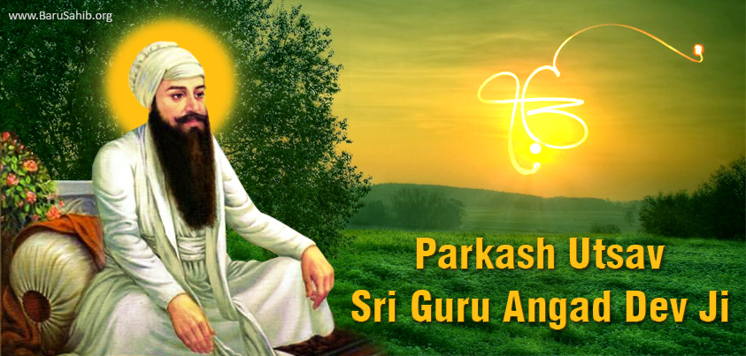

Sikhism


|  | Father name: Pheru Mal Ji Mother Name: Daya Kaur Ji Date of Birth: 31March , 1504 -16 April, 1552 Age: 48 years Place of Birth:Harike, Amritsar Wife: Mata Khivi Ji Children: Bhai Dassu , Bhai Dattu, Bibi Amro & Alakhi Guruship: 18Sep, 1539 - 16April , 1552: 12 years & 6 months Joti-jot: April 16, 1552
|
Guru Angad was born in 1504 A.D. at Sarai Matta in Ferozepur district of the Punjab (India). His father Pheru Mal was a trader. Before becoming the Guru, his name was Lehna. He was married to a lady named Khivi. He had two sons named Dasu and Datu and one daughter named Bibi Amro. At first he was a devotee of Durga, but when he came in contact with Guru Nanak, he became his disciple. His service to Guru Nanak was so sincere and great that Guruship was bestowed on him in 1539 A.D. He passed the rest of his life at village KHADUR in Amritsar District. One day, (Guru) Angad, following Guru Nanak, strayed too far out from Khadur towards Kartarpur; whereupon Guru Nanak asked him to go no further, but to stay there and wait for his next visit. Angad stood looking at the back of the Master as he was slowly going towards Kartarpur, turning now and then to look back at Angad. When his luminous figure had disappeared, Angad saw it entering in his own soul. He felt bewildered with joy and wonder. There he sat on the roadside: lost in himself, his eyes fixed on the half-closed eyes of the mystical Nanak seated in his heart, his soul fast asleep in the Master’s soul. Days passed in that ecstatic trance, the dust settled on his hair, and the tendrils of green grass caught his toes. So did Angad sit in a trance of Dhyanam, with nectar-tears flowing out of his closed eyes, till Nanak returned in haste from Kartarpur to see his mighty lover and his divine Beloved seated on the roadside. The master strained him to his bosom, it was God embracing man. From such holy and secret confluence of the two beloved, the life of spirit flowed in a thousand shining rivers to the soul of the people.
When Nanak left this earth for his original ‘Kartarpur’ , Angad was left again on the roadside on this earth in the same state as when the Master had shown him how to beat physical separation in the union of Dhyanam. But Angad was deeply affected; he sought the lowly house of a humble disciple, and shut himself in a room, unwilling to open his eyes to look at anything else. His soul crane-like flew crying in the midair for his Beloved that had passed the limit of the sky. Months elapsed, and no one knew where was Guru Angad of the people. They hungered to see and to touch their Master, and thirsting crowds streamed hither and thither in the country searching for him. When Bhai Budha at last intruded on the love-samadhi of Angad and persuaded him to come out to his people. When Guru Angad came out of his seclusion to the disciples, “The disciples saw in him the same aura, the same face, and the same speech, as of his Master Nanak. Guru Angad had little children for his playmates and companions. He took interest in wrestling exercises, and was very fond of manly sports. Another delight was the education of young children. He formed a school round him for their instruction and he simplified the old Punjabi characters into a new alphabet, since called Guru Mukhi - Learnt from the mouth of the Master. Angad reduced to writing the accounts of the travels and sayings of his Master, Guru Nanak, as he could get them related by the disciples who had seen him and who came from far and near. He thus made a beginning of the gift of literature to the people, having at the same time given them new alphabet. In addition to the Temple of Bread and the Temple of Song, Guru Angad the Master gave a third, the Temple of Teaching to his people.
Amar Das was a spiritual genius of the times of Guru Angad. He was a vaishnava by faith, and a great pilgrim who had been forty times to the sacred Ganges at Hardwar-going there bare-footed, singing divine hymns all the way, and feeling charitable, good, pure and poor all the while. It was in the Sixty First year of his life, that a trifling event produced a revolution within him; merely the hearing of a song of Guru Nanak sung by Guru Angad’s daughter, Bibi Amro, the wife of Amar Das’ brother’s son. Once, early at dawn, she was reciting the Guru Bani; uttering the Divine music as it is heard ringing through air from the throats of birds that are singing and soaring, while she churned butter for the family. The old uncle Amar Das felt a solace in that angelic voice and a life in the song that he had never felt before, and he drew still nearer to listen to her. “Whose song is it?” said he. “It is the song of Guru Nanak.” He is physically no more in the world but my father Guru Angad Dev Ji is now his successor. Amar Das wanted Bibi Amro to take him to his father. She took the old man to her father. Guru Angad received him with the great respect that was due both of his age and to his position in society. Uncle Amar Das, having seen Guru Angad once, never while living, left his presence. Enraptured by it, Amardas would have died if it had been withdrawn. So deep and intense was his passion that he would find pleasure only in doing every service necessary to the Master; he would bring him a pitcher of fresh river water from the river Beas every day early in the morning for his bath, he would wash his clothes, he would serve him in the Temple of Bread-taking keen delight in self-effacement in his love. He extinguished his little self so thoroughly that he was considered mad; an old man who had no interest in life, he was dubbed Amru, and generally forsaken.
Even Guru Angad, though sweet to everyone else, did not appear to be so gentle with him. For him there was all the rigor of discipline. Nevertheless, Amar Das showed no annoyance at the treatment he received. Only once a year a yard of Khaddar (a coarse cloth) was given to him by Guru Angad; and Amar Das, not knowing where to keep the sacred gift, put it on his head and left it there. He found no other place holy enough for it. Year after year he kept on winding over it the new cloth; and it so was for twelve years. Fond like a child of his Beloved, he would remain looking at him in a continual trance of wonder and joy and love. On the bank of Beas the disciples built a town called Goindwal, and they wished that the holy Guru Angad should go to live there. As he could not go, Guru Angad asked his beloved Amar Das to go and make Goindwal his residence. Amar Das took up his residence at Goindwal; but he would come everyday, the old man, with a brass pitcher of the river-water on his head and the Ganges flowing from his eyes to bathe the Guru. He would come singing Japji all the way, and halt just for a moment’s rest midway at the place where now stands our shrine : Damdama Sahib. While returning from Khadur to Goindwal alone late at night, Amar Das never turned his back on Khadur. He would have died if he had turned his back on the Master even in that way. With his eyes looking still towards Master, he walked backward to Goindwal.
One day, Amar Das, while nearing Khadur with his brass pitcher of the Beas water, fell by the house of a weaver into his loom-pit, having tumbled against a wooden peg that the weaver had driven into the ground. It was a severe winter night, raining and pitch-dark. The weaver’s wife disturbed in her comfortable bed by the noise of his fall, said to her husband, beside her, “ Ah, who can have fallen at our door like that?” The husband replied, “Who else could it be, but the homeless insane Amru; he, who never sleeps, never rests and never tires?” This report reached Guru Angad; the word “homeless” (Nithavan) used by the weaver, moved the Master deeply. He strained the old Amar Das to his bosom; and from their meeting arose another sun in our sky, the new Amar Das. “My Amar Das! my Amar Das,” said the Master, “is the home of the homeless, the refuge of the refuge less, the pride of the foregoers of their own strength. My Amar Das! my Amar Das is the Master. Nanak himself !”
And he in the fashion of Guru Nanak worshipped Amar Das bestowing Guruship and giving him thereby, a throne in the heart of the people. Guru Angad Dev Ji left his mortal frame and immerses his soul in timeless God in 1552 A.D.